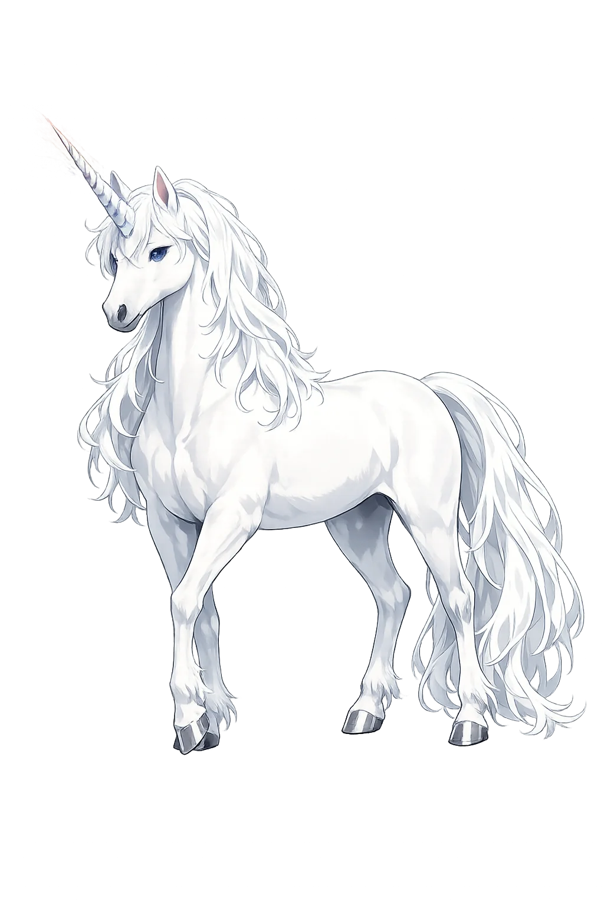

Stories of Monókerōs
The Greek tradition is zoological, not mythological: no hero fights the monokeros, no god rides it. Its power lies precisely in being reported — a creature at the edge of the map, described by those who claim to have seen its horn in the flesh, and believed, half-believed, or corrected by each successive century.
The unicorn's birth certificate is a doctor's field report. Ktēsias of Knidos spent years at the Persian court of Artaxerxēs II as royal physician, and in his Indika — preserved for us in the epitome of Photius (Bibliotheca cod. 72) and echoed by Aelian — he wrote of Indian wild asses 'swifter than horses,' each bearing on its forehead a single horn a cubit and a half long, white at the base, black in the middle, and bright crimson at the tip. Cups rimmed with shavings of the horn, he was told, detect poison: the liquid sweats and beads on the rim if it is tainted. The animals' fleetness made them impossible to hunt; a foal might be taken, but never a grown one. His fellow Greeks already doubted him — the 'liar Ktēsias' was a standing joke within a century — yet every later account of the beast begins here, at a Persian court, in a doctor's notebook.
The report is the myth. No one who wrote the unicorn down ever claimed to have ridden it; they claimed to have heard of it honestly, at one remove from the people who had. The creature's whole career rests on that modest foundation — hearsay reported as hearsay — and it is precisely that honesty about distance that let the story travel further than any verified animal ever could.
Aristotle took the report seriously enough to check its anatomy. In the History of Animals (2.1, 499b) he lists the solid-hooved, single-horned 'Indian ass' alongside the oryx, and he gets the mechanics exactly right: a true single horn must grow from the skull's midline, where the paired horns of cattle arise side by side — a point of osteology no mere storyteller would think to make. Pliny the Elder carries the file forward in his Natural History (8.30): the monoceros has the body of a horse, the head of a stag, the feet of an elephant, the tail of a boar, and a single black horn two cubits long; it is 'the fiercest animal,' uncatchable by strength, and — the detail that betrays the storyteller's art — it can be taken only by stratagem, for when healthy no hunter dares approach it. Between Aristotle's plumb-line and Pliny's stratagem, the beast's zoological dossier is complete and its capture impossible.
The rationalizers did their disciplined best, and the animal slipped every snare. Disproof could not travel faster than the story; a horn 'seen in the flesh' by a merchant's cousin outranked a whole library of anatomy. The unicorn survived its first audit the way it would survive all the rest — by being just out of reach, in India, in the past, in someone else's reliable hands.
The unicorn entered Scripture by a translator's choice. The Hebrew Bible's re'em is a wild ox — the aurochs, most scholars agree — used from Numbers to Job as the standing image of untamable strength: 'Will the re'em be willing to serve you, or abide by your crib? Can you bind him in the furrow with ropes?' (Job 39:9–10). When the Septuagint translators worked in Ptolemaic Alexandria, they had no Greek word fierce enough for God's exhibit of what no man can harness, and they chose monokeros — for by the third century BCE the word already meant the fierce one-horned beast of Indian report. It stands in Numbers 24:8 ('he has, as it were, the glory of a monokeros'), Deuteronomy 33:17 ('his horns are like the horns of a monokeros' — the plural is one of the fingerprints of the original ox), Psalm 21:22 in the Septuagint numbering, and the Job passage; the Latin Vulgate made it usually unicornis, the King James Bible 'unicorn' in 1611.
A Greek traveler's Indian ass thereby entered the Psalms, and every subsequent European imagination. The translators were choosing the fiercest word in their zoology for the most untamable image in their poetry; posterity read the result as a divine warrant for the beast, and the medieval unicorn was already waiting in the wings of the alphabet.
The Physiologus — the Greek bestiary of the early Christian centuries, written in Alexandria — added the one scene that made the legend medieval. The monokeros, it says, is a small fierce animal, catchable by no hunter, fought off by every creature; but it has one weakness, a passion for maidenhood. The hunters station a virgin in the forest; the unicorn runs to her, lays its head in her lap, and sleeps; and in that sleep it is taken — or, in the reading that became doctrine, not taken but incarnate. The allegory wrote itself, and the bestiarists wrote it: the one horn the single Godhead, the virgin the Virgin, the willing captivity the Incarnation — 'he whom no power could hold was held because he willed it.' The Greek traveler's beast passed into Latin bestiaries, thence into the art of a thousand manuscripts and two great tapestry cycles — the Lady with the Unicorn at the Musée de Cluny (c. 1500) and the Hunt of the Unicorn at the Cloisters (c. 1495–1505), the latter ending in the fenced garden where the slain-and-alive creature bleeds into a millefleurs meadow.
Heraldry completed the circuit: the unicorn, chained because a free one is dangerous, became the royal beast of Scotland and, facing the lion, the supporter of the British arms. The stratagem of the virgin became the statecraft of kings — the untamable thing displayed, tastefully, in bonds.
The Untamable, the Pure, and the Report from India
Monókerōs begins not in myth but in the first travel writing of the West: Ktēsias' account of the wild asses of India, each bearing a single horn a cubit and a half long. Between his report and the medieval virgin-and-unicorn lies the whole history of how observation becomes symbol.
The single horn, credited from antiquity with detecting and neutralizing poison.
Ktēsias placed the one-horned wild asses in India — reports that likely fused rhinoceros, onager, and oryx.
The Septuagint rendered the untamable Hebrew re'em as monokeros — the unicorn's biblical passport.
In Job the re'em-monokeros is God's exhibit of what no man can bind to a furrow.
From the original script to the living URL
Μονόκερως
The name in its original Greek form. Monókerōs (Μονόκερως) is attested in the source tradition — “'Single-horned' (from μόνος + κέρας)”. Its long vowels and acute accents carry the full phonetic and orthographic weight of the source tradition.
monokeros
Reduced to plain monokeros, the name loses everything that made it specific: long vowels and acute accents. What remains is an ASCII string that machines can parse but that no longer speaks with its original voice.
Monókerōs
The Unicode restoration recovers what ASCII flattened. Monókerōs restores long vowels and acute accents, returning the name to its original written dignity. The domain encodes to Punycode, but the browser displays the truth.
Monókerōs.com → xn--monkers-n0a72f.com
The non-ASCII characters in Monókerōs are encoded while the ASCII remains visible. To the DNS, it is Punycode. To humanity, it is Monókerōs.
Owned, ideal, and ASCII forms of Monókerōs
Monókerōs
Restores Μονόκερως. The live temple domain — monókerōs.com.
Monokērōs
Restores Μονόκερως. LSJ convention: length only, no stress mark.
monokeros
Flattens Μονόκερως. The plain ASCII fallback — what DNS and legacy systems see.
How Monókerōs was spoken
How Monókerōs is preserved in writing
A bespoke provenance study for Monókerōs is being prepared by the PUNICODEX scholarly team.
Contribute scholarly provenance →Monókerōs is the patron of honest impossibility. The Greeks never claimed to rule it, saddle it, or even see it clearly — they only reported it, at the edge of the known, with scrupulous attention to who had told them and where. It stands for the single, the indivisible, the thing that cannot be made to serve: a reminder that some of the world's value lies in what refuses to be caught.
Enter Extended Lore